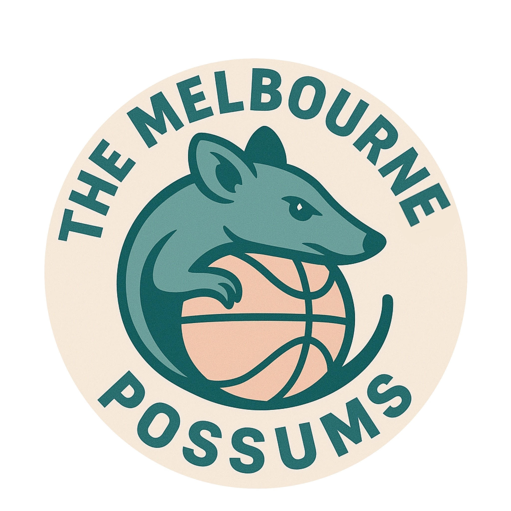

Acknowledgement of Land
We show show our respect and acknowledge the Wurundjeri Woi-wurrung and Bunurong / Boon Wurrung people of the Kulin tribe who are the Traditional Custodians of the Land and to Elders past and present.
About Melbourne Possoms Apparell

Formed in 1975, the Melbourne Possums have evolved to be more than Melbourne's #1 Basketball team. Our clothing line thrives to
redefine the lines between sportswear and streetwear, making our clothes comfortable enough to go to the gym and feel in style.
Launched in 2012, the Melbourne Possums Apparell have put our hardworking, tenacity, and ambition into creating only the best clothes
for our fans and everyone to wear with confidence.
Despite the stark contrast of of fashion and basketball, our goal is only one: to give it our best shot.
For any assistance, please contact us at customerservice@mp.com